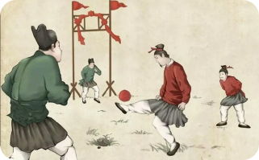

A Origem

Quase todas as culturas do mundo possuem alguma referência ao futebol.
Chineses, japoneses, italianos, gregos antigos, persas, vikings e muitos
outros povos já jogavam algum tipo de jogo de bola em tempos muitos distantes.
Porém, foi na Inglaterra que o futebol realmente começou a tomar forma.
Tudo começou em 1863, quando duas associações de jogos de bola se
separaram, porque os partidários do "rugby" não aceitavam um jogo em que
era proibido segurar a bola com as mãos. E isso acabou dando origem à
The English Football Association, primeira associação inglesa de futebol.